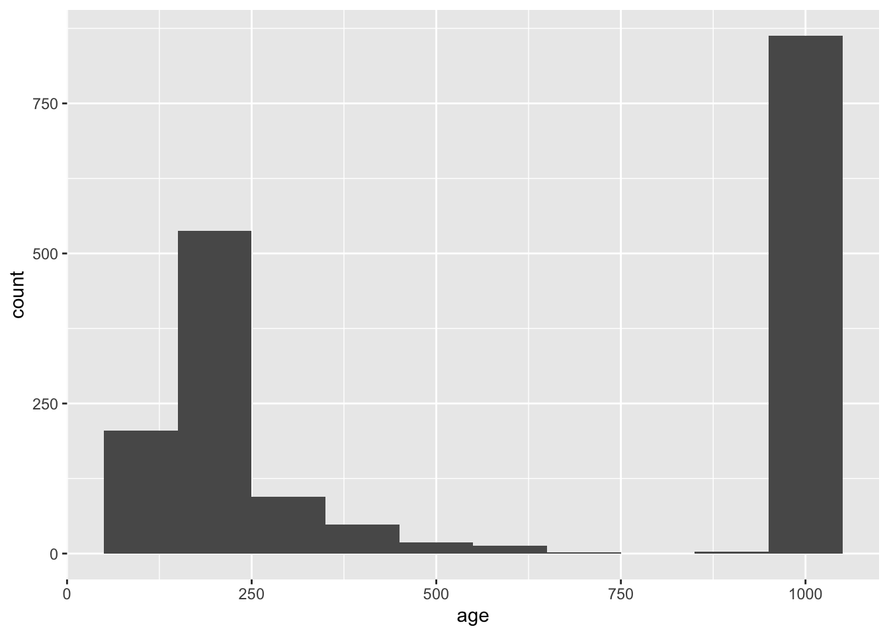
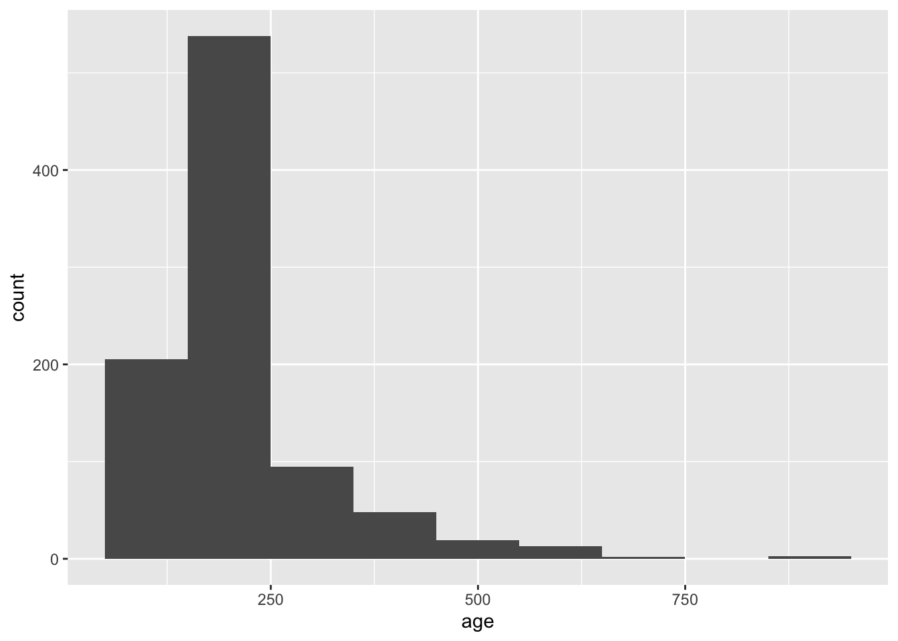

#Code hereAdvanced Data Wrangling
Question
Select all columns relating the crime suspected.
cs_objcs cs_descr cs_casng cs_lkout cs_cloth cs_drgtr cs_furtv cs_vcrim
1 N N Y N N N N N
2 N N Y N N N Y N
3 N N N N N N Y N
4 N N N N N N Y N
5 N N N N N N Y N
cs_bulge cs_other
1 N N
2 N N
3 N Y
4 N Y
5 N YQuestion
Select all of the first 5 columns, except the 4th column.
# Code Here year pct ser_num timestop
1 2011 102 185 0
2 2011 115 50 5
3 2011 100 4 7
4 2011 100 3 7
5 2011 100 1 7Question
Send me the distinct values in the crime suspected column.
# Code Here crimsusp
1 BURGLARY
2 FEL
3 CPW
4 CRIMINAL TRESPASS
5 ROBBERYQuestion
In which rows where a suspect was frisked and searched was either contraband or a pistol found on the suspect? Add a line of code below to determine this.
sqf_2011 |>
select(frisked, searched, contrabn, pistol) |>
head(5) frisked searched contrabn pistol
1 Y N N N
2 Y N N N
3 Y N N N
4 Y N N N
5 Y N N N frisked searched contrabn pistol
1 Y Y N Y
2 Y Y Y N
3 Y Y Y N
4 Y Y N Y
5 Y Y Y NQuestion
Send me all of the rows where the crime suspected contains “FEL.”
# Code Here pct ser_num crimsusp
1 115 50 FEL
2 101 8 FEL
3 70 1 FEL
4 101 11 FELONY
5 28 1 FELONYQuestion
The NYPD uses the number 999 to indicate a missing age. In the code below, add a line to convert 999 to NA, using mutate().
# Code Here
sqf_2011 |>
filter(age > 100) |>
ggplot(aes(x = age)) +
geom_histogram(binwidth = 100)

Question
Add a line to the code below to create a new column called innocent that is set to “Y” if both arstmade and sumissue are “N”, and otherwise set to “N”.
#sqf_2011 |>
#select(pct, ser_num, arstmade, sumissue) #|>
#summarize(num_innocent = sum(innocent == "Y")) num_innocent
1 685022Question
In the following code, the percent total stops is calculated out the total stops for each city. How can I adjust the code if I wanted to calculate percent total stops out of the total stops in the entire dataset.
sqf_2011 |>
group_by(city, race) |>
summarize(count = n()) |>
mutate(total_stops = sum(count)) |>
mutate(percent_total_stops = count/total_stops)`summarise()` has grouped output by 'city'. You can override using the
`.groups` argument.# A tibble: 45 × 5
# Groups: city [6]
city race count total_stops percent_total_stops
<chr> <chr> <int> <int> <dbl>
1 " " B 22 38 0.579
2 " " I 1 38 0.0263
3 " " P 5 38 0.132
4 " " Q 7 38 0.184
5 " " W 3 38 0.0789
6 "BRONX" A 1125 135738 0.00829
7 "BRONX" B 64232 135738 0.473
8 "BRONX" I 340 135738 0.00250
9 "BRONX" P 16311 135738 0.120
10 "BRONX" Q 44325 135738 0.327
# ℹ 35 more rows`summarise()` has grouped output by 'city'. You can override using the
`.groups` argument.# A tibble: 45 × 5
city race count total_stops percent_total_stops
<chr> <chr> <int> <int> <dbl>
1 " " B 22 685724 0.0000321
2 " " I 1 685724 0.00000146
3 " " P 5 685724 0.00000729
4 " " Q 7 685724 0.0000102
5 " " W 3 685724 0.00000437
6 "BRONX" A 1125 685724 0.00164
7 "BRONX" B 64232 685724 0.0937
8 "BRONX" I 340 685724 0.000496
9 "BRONX" P 16311 685724 0.0238
10 "BRONX" Q 44325 685724 0.0646
# ℹ 35 more rowsQuestion
In which precinct were individuals of each race stopped the most?
# Code Here